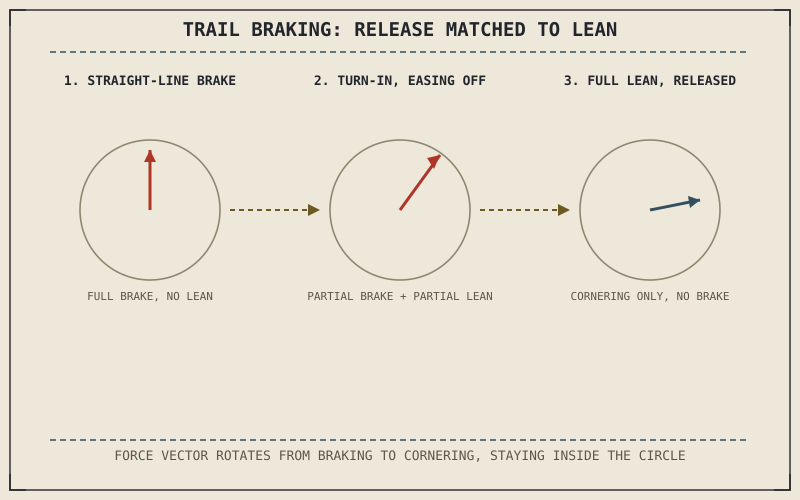

Chapter 8.6 explained why trail braking works: braking and cornering each add normal load to the same tyre, expanding the friction circle even as both draw on it from a combined, shifting direction. This chapter is where that physics becomes a rider's actual hands and eyes, combining the braking skills from Chapters 9.3 and 9.4 with the line and vision from Chapter 9.5 into one continuous motion through a corner.
Chapter 9.5 closed by naming this combination as this chapter's subject. This chapter is that combination.
The Sequence: Brake Straight, Release Into the Turn
In practice, trail braking begins with braking upright, in a straight line, using the progressive technique Chapter 9.3 described, approaching the corner at a speed that will need adjusting before the turn-in point Chapter 9.5's line identifies. As the rider begins countersteering into the lean Chapter 8.4 quantified, brake pressure doesn't release all at once — it eases off progressively, continuing to trail off through the initial part of the turn as lean angle builds and Chapter 8.6's combined friction circle starts drawing more of its capacity toward cornering force and correspondingly less toward braking force.
Why the Release Has to Match the Lean, Not a Fixed Point
Chapter 8.6 established that skilled trail braking releases pressure progressively as lean increases, specifically to keep the combined force vector within the shifting friction circle rather than holding constant brake pressure into an increasing lean angle. In practice, this means the rate of brake release should track how quickly the rider is countersteering into the lean from Chapter 9.5's chosen line — a rider committing to lean quickly needs to release brake pressure correspondingly quickly, while a more gradual entry allows brake pressure to trail off more gradually too, always keeping the combined demand inside the circle Chapter 8.6 described rather than at a fixed, memorized release point regardless of how the corner is actually unfolding.
Trail braking isn't braking, then releasing, then turning as three separate steps — it's one continuous motion where brake release rate is matched to lean rate, keeping the combined cornering-and-braking demand inside Chapter 8.6's shifting friction circle throughout.

A corner sequence showing brake pressure released progressively as lean angle builds through turn-in, with the combined force vector staying inside the friction circle at each stage from straight-line braking through full lean.
Why This Technique Rewards Everything Learned So Far
Trail braking is, in a real sense, a synthesis exercise for nearly everything this part has covered: the smooth control inputs from Chapter 9.2, the progressive braking feel from Chapter 9.3, the threshold-braking sense of the friction circle's edge from Chapter 9.4, and the line and vision from Chapter 9.5 all have to work together simultaneously rather than in isolation. This is precisely why trail braking is usually introduced only after those individual skills are reasonably solid — attempting it before the underlying pieces are comfortable tends to overload a rider trying to consciously manage several inputs that should already be largely automatic.
A Common Misconception, Cleared Up Early
It's a common assumption that trail braking means simply holding the brakes on longer into a corner than usual, treating it as a matter of bravery or aggression rather than technique. What actually defines good trail braking is the precision of the release relative to lean angle, described earlier in this chapter, not how late or how hard the brake is applied in the first place. A rider trail braking well is managing a continuously shifting balance with care, not simply delaying the moment they let go of the brake lever.
Where This Leads
Braking, cornering, and now trail braking all assume speed and enough momentum for the physics this part has drawn on to actually apply. Very slow, tight maneuvering removes much of that momentum and asks for a different set of skills entirely. Chapter 9.7 turns first to body position specifically in fast cornering, before Chapter 9.8 covers the low-speed case this chapter's assumptions don't reach.
Key Concepts to Remember
- Trail braking begins with straight-line braking, then eases brake pressure progressively as countersteering builds lean through turn-in.
- Brake release rate should match the rate of lean, keeping the combined force vector inside the friction circle throughout the turn-in, not at a fixed release point.
- Good trail braking is defined by the precision of the brake release relative to lean angle, not by how late or aggressively the brake is applied.
Cross-References
| ← Ch. 8.6 | Established the physics of combined braking and cornering load transfer; this chapter turns that physics into an actual rider sequence. |
| ← Ch. 8.4 | Quantified the lean angle countersteering produces; this chapter times brake release directly against that same countersteering input. |
| ← Ch. 9.5 | Established the cornering line and turn-in point; this chapter times the braking sequence directly against that same line. |
| → Ch. 9.7 | Covers body position specifically in fast cornering, building on the line and lean established here. |